ABOUT ECLIPSE
Eclipse is an integrated development environment (IDE) used in computer programming, and is the most widely used Java IDE. It contains a base workspace and an extensible plug-in system for customizing the environment. Eclipse is written mostly in Java and its primary use is for developing Java applications, but it may also be used to develop applications in other programming languages through the use of plugins, including: Ada, ABAP, C, C++, COBOL, D, Fortran, Haskell, JavaScript, Julia, Lasso, Lua, NATURAL, Perl, PHP, Prolog, Python, R, Ruby (including Ruby on Rails framework), Rust, Scala, Clojure, Groovy, Scheme, and Erlang. It can also be used to develop documents with LaTeX (through the use of the TeXlipse plugin) and packages for the software Mathematica. Development environments include the Eclipse Java development tools (JDT) for Java and Scala, Eclipse CDT for C/C++ and Eclipse PDT for PHP, among others.
Features
-
Mac Layout
While 10 years is a long time, some Eclipse feature requests last longer than that. In fact, since the very beginning of Eclipse, the Eclipse community has been requesting a proper Mac Application for Eclipse.
This year the Eclipse team finally delivered, shipping the MacOS version as a proper Mac application. This means that Eclipse can be unzipped and dragged directly in your Application folder. With this change, installing Eclipse becomes much easier on Mac, and features like “open with” now work as expected.
-
Platform Improvements
The Eclipse platform is the core of all Eclipse based applications and plugins. Improvements to the platform benefit all users. There are a number of improvements to the core platform this year, including an improved Dark Theme, crisper icons and proper transparency support in SWT.
-
UI Monitoring
From Mac’s spinning beach ball of death to Window’s unresponsive UI, user interface lags take developers out of the flow. Users have tried to fix the problem by clicking the mouse a little harder or hammering on the esc key; but as we all know, that doesn’t work. The only real fix is to understand what long-running task is blocking the UI thread.
-
C/C++ Launching
The developers behind the C/C++ tooling in Eclipse (CDT) have brought a number of new enhancements this year. To make it easier to launch your applications and choose your target device, a new launch bar was added. As well as the launch bar, the CDT also added support for direct Docker deployment. This means that you can deploy your C/C++ applications from Eclipse directly to a docker container.
-
e4 Tools
In 2012 Eclipse launched a new application model called e4. The application can be designed through a series of UI models, styled using CSS and dependencies are managed via DI.
This year, the Eclipse team has released the long awaited tooling for e4 as part of the simultaneous release. The Plug-in Development Environment (PDE) has a series of wizards and tools to help you create an Eclipse 4 application and editors to help you configure your models.
-
JDT Improvements
Eclipse Luna (2014) shipped with Java 8 support and this year the team expanded on that support. There are quick fixes for creating method references from lambda expressions; quick-fixes for inferring lambda parameter; several new templates have been added for things like try / finally and lock acquisition; and much improved static flow analysis.
-
Docker Tools
Throughout any given day, users may work on several different projects. They may work with Tomcat servers, CouchDB, C/C++ builds, node.js and many other technologies. Docker has been a life-saver when it comes to managing all these stacks, and users are excited to see Docker tools integrated directly within Eclipse.
There is a new Docker perspective that you can use to connect to a Docker daemon. There are views to manage your images and containers and even a log inspector.
-
Git Flow
Eclipse has shipped with Git support since 2011. While the tool has improved significantly over the years, many developers would still drop to the command line for custom tasks. One such example is the use of Git Flow. Git Flow is a branching model that places meaning on different branches. Each feature is developed in its own branch, and merged into a standard ‘develop’ branch. To perform a release, the ‘develop’ branch is merged into master. There are tools to help simplify this process.
With Eclipse Mars, there is now support for Git Flow directly from Eclipse.
-
Automatic Error Reporting
Instead of simply logging errors to the console, Eclipse can now report errors directly to the Eclipse committers; putting the information in the hands of those who can use it.
When errors are detected, you will be prompted if you would like to send the details to eclipse.org. Committers will be able to create bug reports from the data, see similar incidents and help triage issues as they come in. Finally, if an issue has already been fixed, Eclipse will notify you and inform you of the version that contains the fix.
-
The Eclipse Installer (by Oomph)
This year Eclipse offers a completely new way to download and work with the IDE. Instead of downloading each package individually, the Eclipse installer by Oomph allows you to choose the installation you wish, and it will provision it for you.
You can choose _bundle pool_, to share Eclipse plugins between installations. This means that if you install another package, all the common bits will be shared. Finally, once Eclipse is started, you can walk through the Eclipse Welcome Questionnaire to set common Eclipse preferences to your liking.
Plugins
-
Subclipse
An Eclipse Team Provider plug-in providing support for Subversion within the Eclipse IDE. Developed and maintained by Subversion core committers, Subclipse is always in synch with the latest Subversion features and releases.
Subclipse includes the CollabNet Merge Client originally developed as part of the CollabNet Desktop - Eclipse Edition. The CollabNet Merge Client provides powerful graphical merge capabilities that leverages the merge tracking functionality that was added as part of the Subversion 1.5 release.
Subclipse includes an optional Mylyn connector that enables Mylyn to create automatic changesets based on the tasks you are working on. It also enables links to tasks when viewing history of Subversion commits.
Finally, Subclipse includes a powerful revision graph feature that is built with Eclipse GEF/Draw2D. This allows you to visualize commits and merges across Subversion branches.
-
UMLet
The free UML tool UMLet lets you draw UML diagrams with a light-weight, pop-up-free user interface. It lets you draw diagram sketches fast; export diagrams to pdf, eps, jpg, gif, svg, bmp, png, and system clipboard; share diagrams using Eclipse 3+; and create your own custom graphical elements.
-
FindBugs
FindBugs is a defect detection tool for Java that uses static analysis to look for more than 200 bug patterns, such as null pointer dereferences, infinite recursive loops, bad uses of the Java libraries and deadlocks. FindBugs can identify hundreds of serious defects in large applications (typically about 1 defect per 1000-2000 lines of non-commenting source statements). FindBugs is open source (LGPL), has been downloaded more than 500,000 times and is used by many major companies and financial institutions.
FindBugs Eclipse Plugin integrates FindBugs seamlessly with the most popular Java IDE and allows to run FindBugs analysis incrementally on changed files or on demand per project.
-
Eclipse Color Theme
Eclipse Color Theme makes it possible to switch color themes conveniently and without side effects.
While Eclipse allows you to change the syntax coloring in great detail, there is no support for managing multiple color themes. It is possible to achieve that by importing and exporting preferences files, but this is inconvenient and likely to mess up your preferences. Furthermore, color themes have to be created for every single editor, a theme for the Java editor does not change the XML, JavaScript or any other editors. This plugin solves these issues by mapping a generic color theme format to specific preferences entries for each supported editor.
-
EGit
EGit is the Git integration for Eclipse. Git is a distributed versioning system, which means every developer has a full copy of all history of every revision of the code, making queries against the history very fast and versatile. The EGit project is implementing Eclipse tooling on top of the JGit Java implementation of Git.
-
PyDev
PyDev is a plugin that enables Eclipse to be used as a Python IDE (supporting also Jython and IronPython).
It uses advanced type inference techniques to provide features such code completion and code analysis, while still providing many others such as a debugger, interactive console, refactoring, etc.
Shortcuts
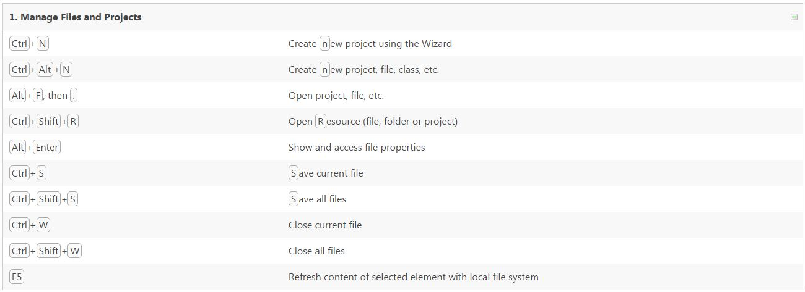 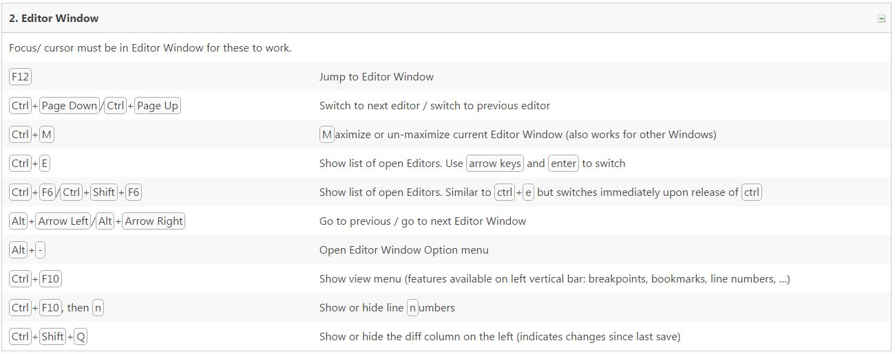 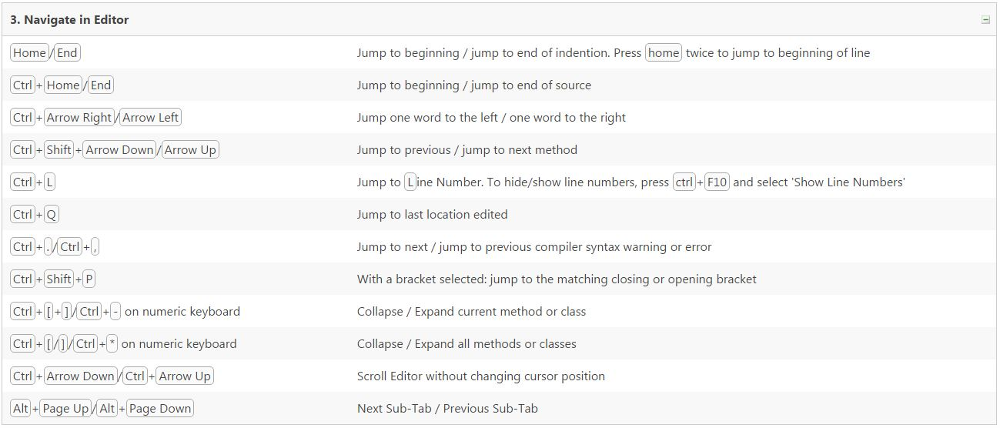 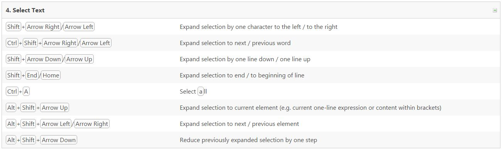 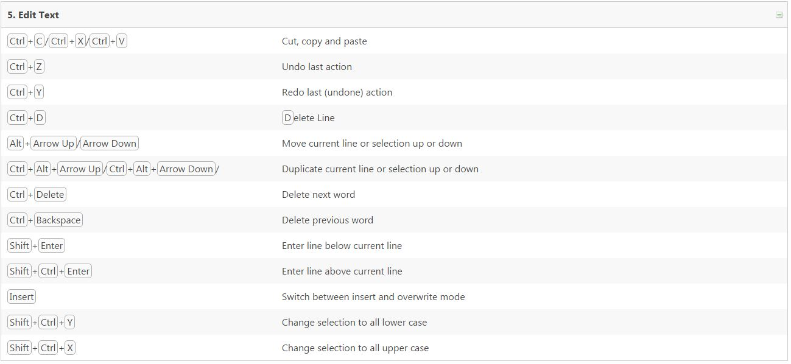 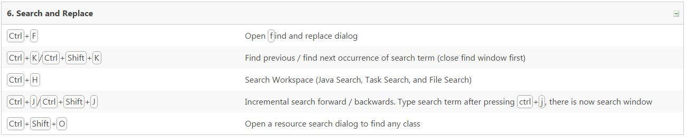 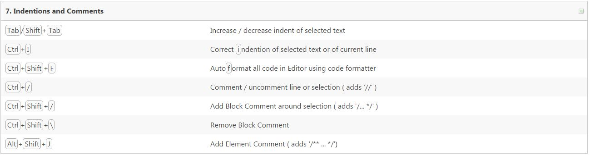 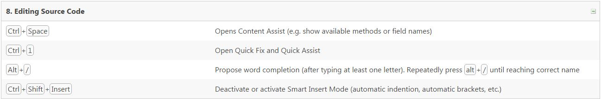 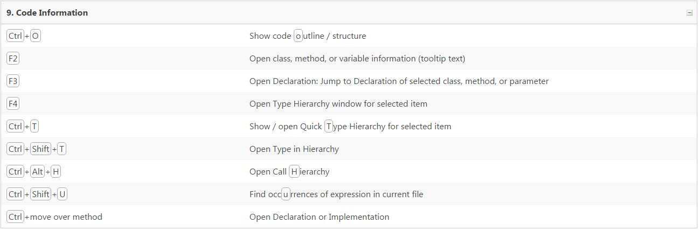 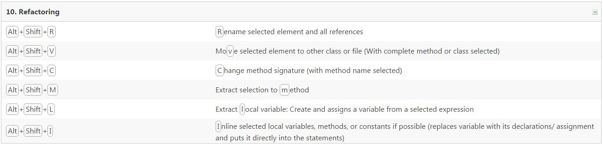 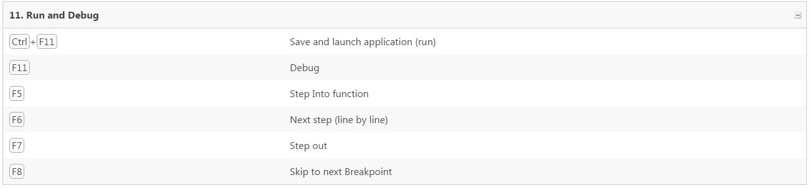 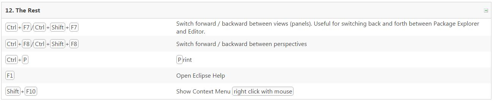 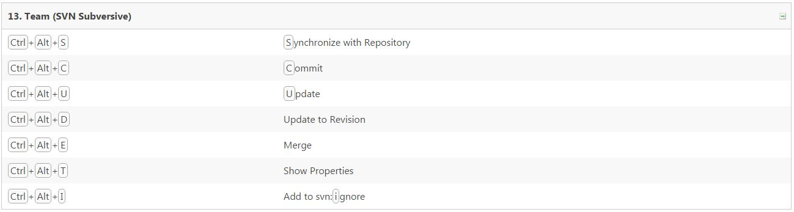
PLAY BLACKJACK
Blackjack description placeholder
Play The Game: Not Available Yet
Pseudocode: Available Here